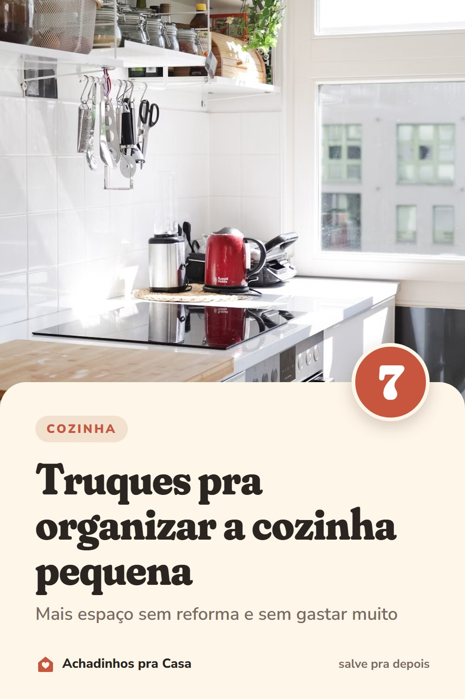

Cozinha
7 truques pra organizar a cozinha pequena
Mais espaço sem reforma e sem gastar muito.
- Use a paredeUma barra com ganchos tira os utensílios da gaveta e deixa tudo à mão.
- Prateleiras suspensas acima da bancadaElas liberam a bancada para o que você usa todo dia.
- Organizadores de dois andaresDentro dos armários, eles dobram o espaço para pratos e potes.
- Potes quadrados e empilháveisAproveitam melhor o espaço do que os redondos.
- A porta do armário também é espaçoGanchos adesivos seguram tampas e panos de prato.
- Um carrinho estreitoEntre a geladeira e a parede costuma caber um carrinho de apoio com rodinhas.
- Bancada só com o essencialDeixe à vista só o que você usa todo dia. O resto vai para os armários.